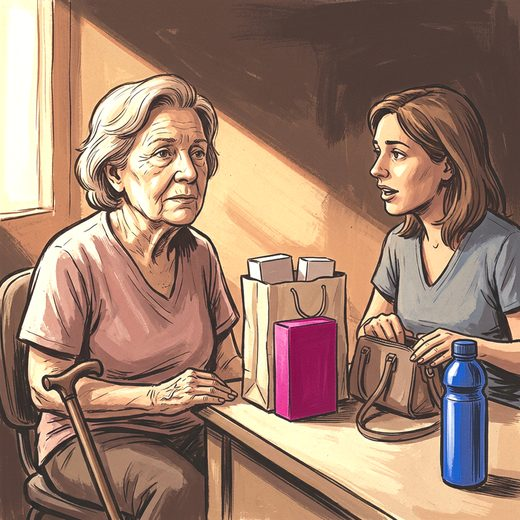

Consulta rápida à beira do leito
Condutas, doses e interações.
Referências da aula · 7
- Agrawal Y, van de Berg R, Wuyts F, et al. Presbyvestibulopathy: diagnostic criteria. Consensus document of the Classification Committee of the Bárány Society. J Vestib Res. 2019;29(4):161-70. doi:10.3233/VES-190672. PMID 31306146.PubMedDOI
- Müller KJ, Becker-Bense S, Strobl R, Grill E, Dieterich M. Chronic vestibular syndromes in the elderly: presbyvestibulopathy, an isolated clinical entity? Eur J Neurol. 2022;29(6):1825-35. doi:10.1111/ene.15308. PMID 35239246.PubMedDOI
- Li Y, Smith RM, Whitney SL, Seemungal BM, Ellmers TJ. Association between dizziness and future falls and fall-related injuries in older adults: a systematic review and meta-analysis. Age Ageing. 2024;53(9):afae177. PMID 39293812. doi:10.1093/ageing/afae177.PubMedDOI
- Montero-Odasso M, van der Velde N, Martin FC, et al. World guidelines for falls prevention and management for older adults: a global initiative. Age Ageing. 2022;51(9):afac205. PMID 36178003. doi:10.1093/ageing/afac205.PubMedDOI
- 2023 American Geriatrics Society Beers Criteria® Update Expert Panel. American Geriatrics Society 2023 updated AGS Beers Criteria® for potentially inappropriate medication use in older adults. J Am Geriatr Soc. 2023;71(7):2052-81. PMID 37139824. doi:10.1111/jgs.18372.PubMedDOI
- O'Mahony D, Cherubini A, Guiteras AR, et al. STOPP/START criteria for potentially inappropriate prescribing in older people: version 3. Eur Geriatr Med. 2023;14(4):625-32. PMID 37256475. doi:10.1007/s41999-023-00777-y.PubMedDOI
- Drachman DA, Hart CW. An approach to the dizzy patient. Neurology. 1972;22(4):323-34. PMID 4401538. doi:10.1212/wnl.22.4.323.PubMedDOI